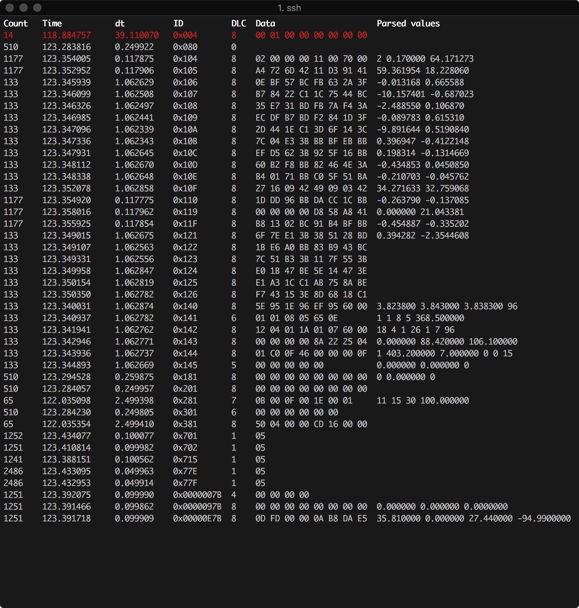

Scripts¶
The following modules are callable from python-can.
They can be called for example by python -m can.logger or can_logger.py (if installed using pip).
can.logger¶
Command line help, called with --help:
$ python -m can.logger -h
usage: logger.py [-h] [-c CHANNEL]
[-i {canalystii,cantact,etas,gs_usb,iscan,ixxat,kvaser,neousys,neovi,nican,nixnet,pcan,robotell,seeedstudio,serial,slcan,socketcan,socketcand,systec,udp_multicast,usb2can,vector,virtual}]
[-b BITRATE] [--fd] [--data_bitrate DATA_BITRATE]
[-f LOG_FILE] [-a] [-s FILE_SIZE] [-v]
[--filter {<can_id>:<can_mask>,<can_id>~<can_mask>} [{<can_id>:<can_mask>,<can_id>~<can_mask>} ...]]
[--active | --passive]
...
Log CAN traffic, printing messages to stdout or to a given file.
positional arguments:
extra_args The remaining arguments will be used for the interface
and logger/player initialisation. For example, `-i
vector -c 1 --app-name=MyCanApp` is the equivalent to
opening the bus with `Bus('vector', channel=1,
app_name='MyCanApp')
optional arguments:
-h, --help show this help message and exit
-c CHANNEL, --channel CHANNEL
Most backend interfaces require some sort of channel.
For example with the serial interface the channel
might be a rfcomm device: "/dev/rfcomm0". With the
socketcan interface valid channel examples include:
"can0", "vcan0".
-i {canalystii,cantact,etas,gs_usb,iscan,ixxat,kvaser,neousys,neovi,nican,nixnet,pcan,robotell,seeedstudio,serial,slcan,socketcan,socketcand,systec,udp_multicast,usb2can,vector,virtual}, --interface {canalystii,cantact,etas,gs_usb,iscan,ixxat,kvaser,neousys,neovi,nican,nixnet,pcan,robotell,seeedstudio,serial,slcan,socketcan,socketcand,systec,udp_multicast,usb2can,vector,virtual}
Specify the backend CAN interface to use. If left
blank, fall back to reading from configuration files.
-b BITRATE, --bitrate BITRATE
Bitrate to use for the CAN bus.
--fd Activate CAN-FD support
--data_bitrate DATA_BITRATE
Bitrate to use for the data phase in case of CAN-FD.
-f LOG_FILE, --file_name LOG_FILE
Path and base log filename, for supported types see
can.Logger.
-a, --append Append to the log file if it already exists.
-s FILE_SIZE, --file_size FILE_SIZE
Maximum file size in bytes. Rotate log file when size
threshold is reached. (The resulting file sizes will
be consistent, but are not guaranteed to be exactly
what is specified here due to the rollover conditions
being logger implementation specific.)
-v How much information do you want to see at the command
line? You can add several of these e.g., -vv is DEBUG
--filter {<can_id>:<can_mask>,<can_id>~<can_mask>} [{<can_id>:<can_mask>,<can_id>~<can_mask>} ...]
R|Space separated CAN filters for the given CAN
interface: <can_id>:<can_mask> (matches when
<received_can_id> & mask == can_id & mask)
<can_id>~<can_mask> (matches when <received_can_id> &
mask != can_id & mask) Fx to show only frames with ID
0x100 to 0x103 and 0x200 to 0x20F: python -m
can.viewer -f 100:7FC 200:7F0 Note that the ID and
mask are always interpreted as hex values
--active Start the bus as active, this is applied by default.
--passive Start the bus as passive.
can.player¶
$ python -m can.player -h
usage: player.py [-h] [-c CHANNEL]
[-i {canalystii,cantact,etas,gs_usb,iscan,ixxat,kvaser,neousys,neovi,nican,nixnet,pcan,robotell,seeedstudio,serial,slcan,socketcan,socketcand,systec,udp_multicast,usb2can,vector,virtual}]
[-b BITRATE] [--fd] [--data_bitrate DATA_BITRATE]
[-f LOG_FILE] [-v] [--ignore-timestamps] [--error-frames]
[-g GAP] [-s SKIP]
... input-file
Replay CAN traffic.
positional arguments:
extra_args The remaining arguments will be used for the interface
and logger/player initialisation. For example, `-i
vector -c 1 --app-name=MyCanApp` is the equivalent to
opening the bus with `Bus('vector', channel=1,
app_name='MyCanApp')
input-file The file to replay. For supported types see
can.LogReader.
optional arguments:
-h, --help show this help message and exit
-c CHANNEL, --channel CHANNEL
Most backend interfaces require some sort of channel.
For example with the serial interface the channel
might be a rfcomm device: "/dev/rfcomm0". With the
socketcan interface valid channel examples include:
"can0", "vcan0".
-i {canalystii,cantact,etas,gs_usb,iscan,ixxat,kvaser,neousys,neovi,nican,nixnet,pcan,robotell,seeedstudio,serial,slcan,socketcan,socketcand,systec,udp_multicast,usb2can,vector,virtual}, --interface {canalystii,cantact,etas,gs_usb,iscan,ixxat,kvaser,neousys,neovi,nican,nixnet,pcan,robotell,seeedstudio,serial,slcan,socketcan,socketcand,systec,udp_multicast,usb2can,vector,virtual}
Specify the backend CAN interface to use. If left
blank, fall back to reading from configuration files.
-b BITRATE, --bitrate BITRATE
Bitrate to use for the CAN bus.
--fd Activate CAN-FD support
--data_bitrate DATA_BITRATE
Bitrate to use for the data phase in case of CAN-FD.
-f LOG_FILE, --file_name LOG_FILE
Path and base log filename, for supported types see
can.LogReader.
-v Also print can frames to stdout. You can add several
of these to enable debugging
--ignore-timestamps Ignore timestamps (send all frames immediately with
minimum gap between frames)
--error-frames Also send error frames to the interface.
-g GAP, --gap GAP <s> minimum time between replayed frames
-s SKIP, --skip SKIP <s> skip gaps greater than 's' seconds
can.viewer¶
A screenshot of the application can be seen below:
{kind=link}
The first column is the number of times a frame with the particular ID that has been received, next is the timestamp of the frame relative to the first received message. The third column is the time between the current frame relative to the previous one. Next is the length of the frame, the data and then the decoded data converted according to the -d argument. The top red row indicates an error frame.
Command line arguments¶
By default the can.viewer uses the SocketCAN interface. All interfaces are supported and can be specified using the -i argument or configured following Configuration.
The full usage page can be seen below:
$ python -m can.viewer -h
You won't be able to use the viewer program without curses installed!
Usage: python -m can.viewer [-c CHANNEL]
[-i {canalystii,cantact,etas,gs_usb,iscan,ixxat,kvaser,neousys,neovi,nican,nixnet,pcan,robotell,seeedstudio,serial,slcan,socketcan,socketcand,systec,udp_multicast,usb2can,vector,virtual}]
[-b BITRATE] [--fd] [--data_bitrate DATA_BITRATE]
[-h] [--version]
[-d '{<id>:<format>,<id>:<format>:<scaling1>:...:<scalingN>,file.txt}',)]
[-f ('{<can_id>:<can_mask>,<can_id>~<can_mask>}',]
[-v]
'extra_args',
A simple CAN viewer terminal application written in Python
positional arguments:
extra_args The remaining arguments will be used for the interface
and logger/player initialisation. For example, `-i
vector -c 1 --app-name=MyCanApp` is the equivalent to
opening the bus with `Bus('vector', channel=1,
app_name='MyCanApp')
optional arguments:
-c, --channel CHANNEL
Most backend interfaces require some sort of channel.
For example with the serial interface the channel
might be a rfcomm device: "/dev/rfcomm0". With the
socketcan interface valid channel examples include:
"can0", "vcan0".
-i, --interface {canalystii,cantact,etas,gs_usb,iscan,ixxat,kvaser,neousys,neovi,nican,nixnet,pcan,robotell,seeedstudio,serial,slcan,socketcan,socketcand,systec,udp_multicast,usb2can,vector,virtual}
Specify the backend CAN interface to use. If left
blank, fall back to reading from configuration files.
-b, --bitrate BITRATE
Bitrate to use for the CAN bus.
--fd Activate CAN-FD support
--data_bitrate DATA_BITRATE
Bitrate to use for the data phase in case of CAN-FD.
Optional arguments:
-h, --help Show this help message and exit
--version Show program's version number and exit
-d, --decode ('{<id>:<format>,<id>:<format>:<scaling1>:...:<scalingN>,file.txt}',)
Specify how to convert the raw bytes into real values.
The ID of the frame is given as the first argument and the format as the second.
The Python struct package is used to unpack the received data
where the format characters have the following meaning:
< = little-endian, > = big-endian
x = pad byte
c = char
? = bool
b = int8_t, B = uint8_t
h = int16, H = uint16
l = int32_t, L = uint32_t
q = int64_t, Q = uint64_t
f = float (32-bits), d = double (64-bits)
Fx to convert six bytes with ID 0x100 into uint8_t, uint16 and uint32_t:
$ python -m can.viewer -d "100:<BHL"
Note that the IDs are always interpreted as hex values.
An optional conversion from integers to real units can be given
as additional arguments. In order to convert from raw integer
values the values are divided with the corresponding scaling value,
similarly the values are multiplied by the scaling value in order
to convert from real units to raw integer values.
Fx lets say the uint8_t needs no conversion, but the uint16 and the uint32_t
needs to be divided by 10 and 100 respectively:
$ python -m can.viewer -d "101:<BHL:1:10.0:100.0"
Be aware that integer division is performed if the scaling value is an integer.
Multiple arguments are separated by spaces:
$ python -m can.viewer -d "100:<BHL" "101:<BHL:1:10.0:100.0"
Alternatively a file containing the conversion strings separated by new lines
can be given as input:
$ cat file.txt
100:<BHL
101:<BHL:1:10.0:100.0
$ python -m can.viewer -d file.txt
-f, --filter ('{<can_id>:<can_mask>,<can_id>~<can_mask>}',)
Space separated CAN filters for the given CAN interface:
<can_id>:<can_mask> (matches when <received_can_id> & mask == can_id & mask)
<can_id>~<can_mask> (matches when <received_can_id> & mask != can_id & mask)
Fx to show only frames with ID 0x100 to 0x103 and 0x200 to 0x20F:
python -m can.viewer -f 100:7FC 200:7F0
Note that the ID and mask are always interpreted as hex values
-v How much information do you want to see at the command
line? You can add several of these e.g., -vv is DEBUG
Shortcuts:
+---------+-------------------------------+
| Key | Description |
+---------+-------------------------------+
| ESQ/q | Exit the viewer |
| c | Clear the stored frames |
| s | Sort the stored frames |
| h | Toggle highlight byte changes |
| SPACE | Pause the viewer |
| UP/DOWN | Scroll the viewer |
+---------+-------------------------------+